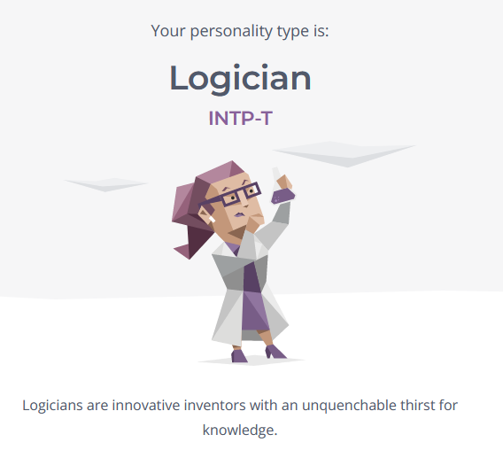
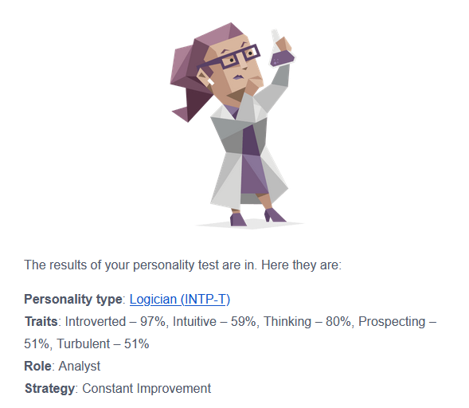

Animals
First on the list are animals. I've always had a love for animals. No matter which one it is. If I can hug it then I can love it.
Sadly, not every animal that is huggable is obtainable. Dogs are my favourite household pet, followed by cats. My favourite type of dog
is the Caucasian Shepherd.
If you were interested enough to click the link, you can most likely see why I love these dogs. Despite the fact that they are
big fluff balls of fur, they are very ferocious and protective dogs.
Food
Next is food. Bet you saw this coming. Bet it was on everyone else's lists too but can you blame them?
Who doesn't love a nice plate of mashed potatoes and chicken? Thats definitely one of my favourite meals to date.
That's enough about foods, though, since I do have a lot to cover on this site.
Nature
If you don't feel some type of tranquility and peace from just simply looking out at God's creation, then I don't think anything
can calm you down. Simple, beautiful, and filled with co-existing life. To me, nature is the physical definition of beauty and perfection
and nothing that man makes could ever top her beauty.


Anime
I've watched quite a few animes, but if I was to ever pick which ones I could not live without, they'd be Attack on Titan and Demon Slayer.
Those two animes were the first to ever make me genuinely excited for the next season and they both have great stories and stunning animations.


Personality
To a lot of people, I am considered a very quiet person. I'm ok with a lot of things as in I won't let it bother me.
Some people even call me an introvert.I guess that's not a good trait to have in a very social setting like school, but I've been surviving.
I talk when i need to and, to me, that is enough.
Throughout my life, I've heard multiple motivational speeches and each had a plethora of quotes that I was informed to live by.
I remember a couple months ago I heard one that has been in my head ever since. It says One day, or day one.
I have not been able to get those words out of my mind and even though I am not performing to the best of my abilities,
I try my best to live by those every single day.
My hero is actually a very good friend of mine. His name is Devin. He wasn't the one that quoted what I said before,
but he pushes me to be the best version of me and always makes sure I know to never be comfortable in my position.
Went from some random kid I met online to my bestfriend.
Personality Type
 For the most part I do agree with these stats, though I'd bring the thinking down a bit lol.